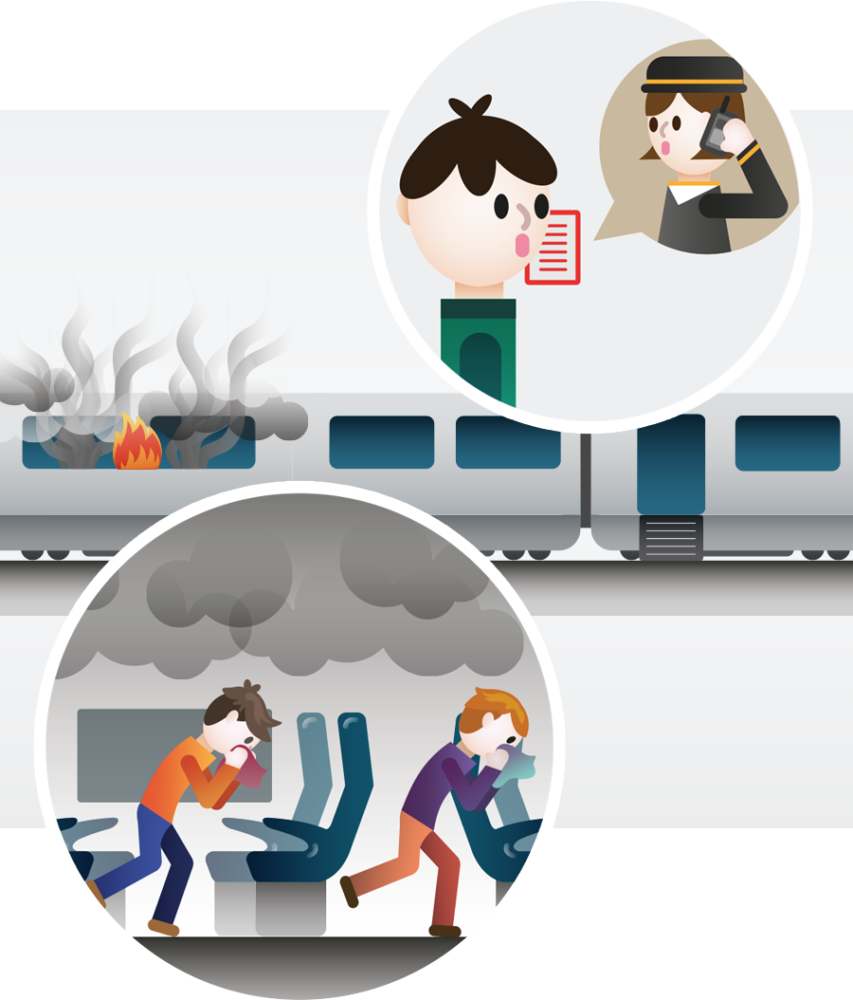

출입문 옆에 있는 인터폰으로 승무원에게 화재 발생을 알리고, 눈에 보이는 곳에서 불이 났다면 객실 내 비치된 소화기로 불을 끕니다.

입과 코를 손수건, 스카프, 옷소매 등으로 막고 다른 객차로 옮겨 갑니다. 불을 꺼도 객실 안에는 연기와 유독가스가 차게 됩니다.
안전한 다른 객차에서 안내 방송에 귀를 기울입니다. 다음 역에서 대피할 수도 있고, 플랫폼이 없는 곳에 정차할 수도 있습니다.
플랫폼이 아닌 곳에서 열차가 멈추면 승강문이 열리고 비상사다리가 설치됩니다. 문이 자동으로 열리지 않을 때는 문 옆의 비상개방 박스를 열고 수동으로 열 수 있습니다.
비상개방 커버를 열고 레버를 당깁니다. ▷ 공기 빠지는 소리가 나고 버튼이 튀어 나오면 잡아 당깁니다. ▷ 문이 밖으로 밀려나가면 손잡이를 잡고 옆으로 밀어 엽니다.
열차에서 내릴 때는 바닥이 안전한지 살피고 높이에 유의합니다. 레일에 전류가 흐르는 경우가 많으므로 레일에 발을 딛지 않도록 주의합니다.
열차에서 내린 후에는 선로 가까이에 머무르지 말고 인도로 이동해 구원 운송수단을 기다립니다.
열차가 터널 안에서 멈춰 섰다면 가까운 비상구로 대피합니다. 비상구가 없을 때는 터널을 따라 바람이 불어오는 방향으로 이동합니다.